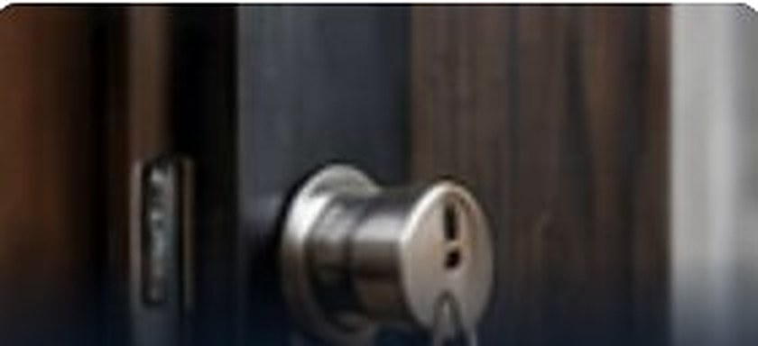

Anti-snap cylinder
A euro cylinder built to resist lock snapping, where a burglar breaks the cylinder to open the door. Look for TS007 3-star or Sold Secure Diamond.
Lock changes
Locks explainedA euro cylinder built to resist lock snapping, where a burglar breaks the cylinder to open the door. Look for TS007 3-star or Sold Secure Diamond.
Lock changesThe standard for thief-resistant locks on wooden doors. Many home insurers ask for it on outside doors.
Lock changesA door made of several materials, such as a timber or foam core with a GRP skin. Strong and low-maintenance, usually with a multipoint lock.
uPVC doors and windowsA lock that can only be opened with a key or thumbturn, not by pushing the latch back. Most mortice deadlocks are on wooden doors.
Lock changesThe common lock barrel on uPVC and composite doors. It can be changed on its own without replacing the whole lock.
Lock changesThe part inside a multipoint lock that the handle turns. When it wears out, the handle drops or the door will not lock.
uPVC doors and windowsA set of locks that all open with the same key, so one key works on every door.
Lock changesThe BSI mark stamped on locks that meet a British Standard. Check the lock face or cylinder for it.
Security surveysOpening a lock without its key by moving the pins inside. Good locks resist it, and locksmiths use it for non-destructive entry.
Lockouts and lost keysA burglary method that breaks a weak euro cylinder in seconds. An anti-snap cylinder stops it.
Security upgradesA set of locks where each person has a key for only the doors they need, and a master key opens them all.
Commercial locksmithA lock fitted into a pocket cut in the edge of a wooden door. Often the deadlock on a front door.
Lock repairsA lock that bolts the door at several points along its edge. Found on most uPVC and composite doors.
uPVC doors and windowsA surface-mounted lock that latches when the door closes. Usually paired with a mortice deadlock.
Lock repairsOpening a locked door without damaging the lock or door, by picking or bypassing the lock.
Emergency locksmithThe round cylinder on the outside of a night latch. You turn your key in it to open the latch.
Lock repairsThe highest grade from the Sold Secure test house for euro cylinders, tested against snapping and other attacks.
Security upgradesA wooden door. Usually secured with a night latch and a BS 3621 mortice deadlock.
Door repairsThe top rating under the TS007 standard for euro cylinders, which includes resistance to snapping.
Security upgradesA plastic-framed door with a steel-reinforced frame and a multipoint lock. Common on homes across East London.
uPVC doors and windowsCall us and you speak to a local locksmith, any time of day or night.
Call 07958 033395